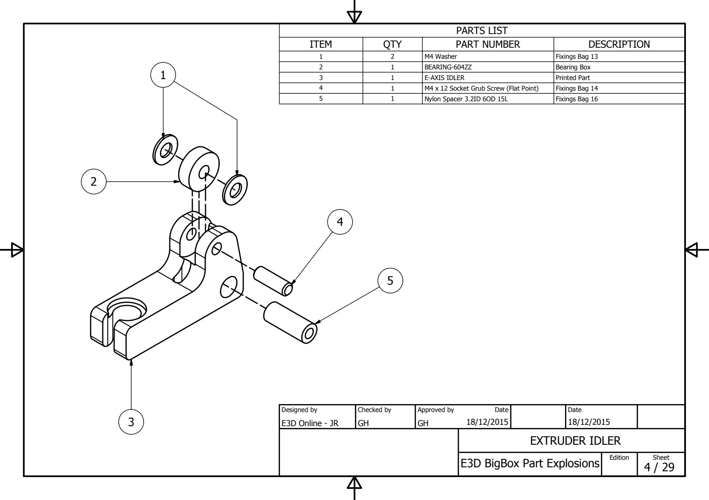

Rebuilt page · source: wiki.e3d-online.com/wiki/Non-Titan_Idler_Arms · archive link (parent page)
Recovered from an older version of BigBox Parts Preparation (20160807071206), section "(4) Single & Dual Extruder Filament Idlers" — the separate wiki page is not in the archive.

Drawn from sheet 4 of the exploded drawings PDF; the wiki's own copy of this image was not archived.
If you are building a Titan BigBox you can skip this step.
Part-thread the M4 12mm grub screw through the idler arms, carefully feeding on the 604-ZZ (4mm ID x 12mm OD x 4mm W) bearing and washer before tightening (washer-bearing-washer).
Note : The grub screw is 2mm shorter than the thickness of the idler. Take care to center it in the part.
Note : The 604zz Bearing(s) are in the Extruder Box.
If you are building a Titan BigBox you can skip this step.
This is the updated Hybrid Idler.
Note : The 604zz Bearing(s) are in with the Printed Parts.